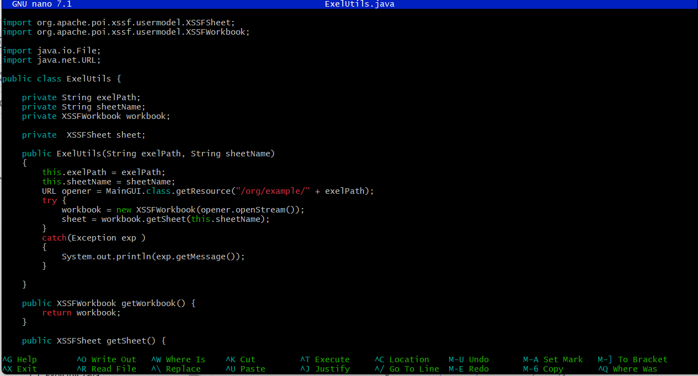

Automation Research Intern
Real Frequency, Spokane January 2024 - August 2024My first computer science related internship. I worked at a college counseling firm, working on automating some excel tasks, to make things easier for the business owners. Over the summer, I developed an app that was able to save my client 379$ per year.
This experience strengthened my skills in automation, scripting, and software development, and provided valuable insights into how technology can solve real-world business problems.
The GitHub is available at here .
Throughout this project, I followed Agile development principles, iterating on the application based on continuous client feedback. Instead of delivering a single final product, I built small, testable features and improved them through multiple feedback loops. I also learned how to prioritize tasks, adapt to changing requirements, and communicate effectively with stakeholders—all key aspects of Agile methodology.